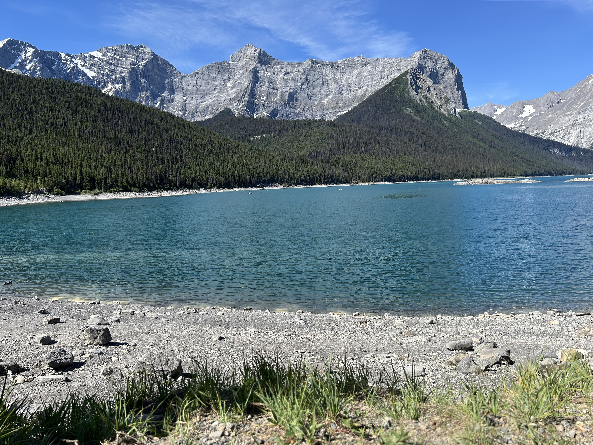

Waterton, Canada
Waterton is a hidden gem that never fails to capture my heart. Tucked away in southern Alberta, this charming little destination offers a perfect blend of natural beauty and tranquility. Surrounded by towering mountains, pristine lakes, and vibrant wildflowers, Waterton feels like a dreamscape brought to life. The calm waters of Waterton Lake glisten under the sun, framed by rugged peaks that seem to touch the sky, creating a view that’s nothing short of magical.
What I love most about Waterton is its peaceful, untouched vibe. Hiking through the park’s trails feels like stepping into another world, where the only sounds are the rustle of leaves and the gentle calls of birds. The iconic Red Rock Canyon, with its striking crimson hues, is a marvel of nature that I never get tired of exploring. There’s something deeply calming about watching the creek wind its way through the canyon, surrounded by vibrant greenery and the occasional curious deer.

The town of Waterton itself is small but full of character, offering a cozy retreat after a day of adventures. From charming local eateries to welcoming shops, it has a laid-back atmosphere that instantly makes you feel at home. Whether it’s the vibrant blooms of wildflowers in summer or the serene beauty of snow-dusted landscapes in winter, every season in Waterton offers something special. It’s a place where I feel connected to nature, at peace with the world, and completely at ease—an escape I’ll always cherish.
Banff, Canada
Banff, with its breathtaking landscapes and serene atmosphere, is truly a slice of paradise. Nestled in the heart of the Canadian Rockies, it offers a unique combination of majestic mountains, crystal-clear lakes, and lush forests that captivate the soul. Every visit feels like stepping into a postcard, with iconic sights like Lake Louise and Moraine Lake leaving me in awe every time. The way the turquoise waters reflect the surrounding peaks is simply magical, and it’s a reminder of nature’s unparalleled beauty.
One of the things I love most about Banff is the sheer variety of outdoor adventures it offers. Whether it's hiking the rugged trails, exploring hidden waterfalls, or simply taking in the view from a quiet mountain overlook, there's something for everyone. The crisp mountain air fills me with energy, and the peaceful environment helps me disconnect from the hustle of daily life. Banff's wildlife is another highlight, with elk, deer, and even the occasional bear adding an element of excitement to every outing.
Beyond the natural beauty, Banff’s charm extends to its quaint town. The cozy streets lined with unique shops and inviting cafés create a warm and welcoming vibe. Sipping hot chocolate while surrounded by snow-covered peaks in winter or enjoying a leisurely stroll under the summer sun makes every season special. Banff holds a special place in my heart, not just for its stunning scenery but also for the sense of peace and wonder it inspires. It’s a place I’ll always love and look forward to visiting.
Florence, Italy
Florence, the cradle of the Renaissance, is a city rich in history, art, and architecture. The Florence Cathedral (Duomo) and the Uffizi Gallery are must-visit landmarks that showcase masterpieces from Botticelli to Michelangelo. The city’s cobbled streets and piazzas exude old-world charm.

Visitors should plan to enjoy authentic Tuscan cuisine, including dishes like ribollita and bistecca alla Fiorentina. For a breathtaking view of the city, climb to Piazzale Michelangelo. Florence is a city that leaves a lasting impression on every traveler.